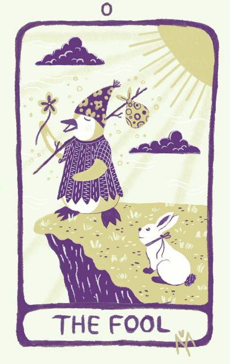

Representa el poder de la voluntad y la manifestación. Es el iniciador de acciones creativas y posee habilidades para canalizar energías y convertir ideas en realidad.

Simboliza la intuición profunda, el conocimiento interior y la conexión con lo divino femenino. Es la guardiana de los secretos y la sabiduría oculta.
Representa la feminidad, la fertilidad y la creatividad. Es símbolo de abundancia, belleza y poder creativo en todas sus formas.

Simboliza la autoridad, la estabilidad y el poder estructurado. Representa el control consciente y la capacidad de liderazgo.
Representa la enseñanza, la tradición y la búsqueda de conocimiento espiritual. Es el puente entre lo divino y lo humano, y representa la sabiduría recibida a través de la educación formal.

Simboliza la pausa, el sacrificio y la necesidad de ver las cosas desde una perspectiva diferente. Representa la renuncia temporal para obtener una comprensión más profunda.

Representa el control, la determinación y el impulso hacia adelante. Simboliza el éxito a través del esfuerzo y la voluntad.

Simboliza el coraje, la fuerza interior y el dominio de los impulsos. Representa la capacidad de superar desafíos con compasión y control.

Representa la introspección, la sabiduría interior y la búsqueda de respuestas en la soledad. Es el guía que lleva a la iluminación a través del autoconocimiento.

Simboliza el ciclo de la vida, el destino y las oportunidades que se presentan. Representa los cambios inevitables y las fluctuaciones de la fortuna.

Representa la equidad, el equilibrio y la toma de decisiones justas y basadas en la verdad. Es símbolo de responsabilidad y rectitud.

Simboliza la pausa, el sacrificio y la necesidad de ver las cosas desde una perspectiva diferente. Representa la renuncia temporal para obtener una comprensión más profunda.

Representa el cambio, la transformación y el fin de una etapa para dar paso a una nueva. Es símbolo de renovación y liberación.
Simboliza la armonía, el equilibrio interior y la moderación en todas las cosas. Representa la integración de opuestos y la búsqueda de paz interior.
Representa las tentaciones, las ataduras y las limitaciones autoimpuestas. Simboliza la necesidad de liberarse de las cadenas mentales y emocionales.

Simboliza la destrucción de estructuras obsoletas para permitir el renacimiento y la transformación. Es la revelación repentina que lleva al cambio radical.
Representa la esperanza, la inspiración y la conexión con lo divino. Es símbolo de fe y renovación espiritual.

Simboliza la intuición profunda, los secretos ocultos y los ciclos emocionales. Representa la mente subconsciente y la exploración de las profundidades del alma.

Representa la alegría, la claridad y la energía positiva en la vida. Es símbolo de éxito, vitalidad y realización.

Simboliza la evaluación, el despertar espiritual y la toma de responsabilidad por nuestras acciones. Es la llamada a la transformación consciente.

Simboliza la evaluación, el despertar espiritual y la toma de responsabilidad por nuestras acciones. Es la llamada a la transformación consciente.
Representa la libertad, la espontaneidad y el inicio de un nuevo ciclo. Simboliza la confianza en el universo y la disposición para aventurarse sin restricciones ni expectativas preconcebidas. Es la energía del presente y la apertura a nuevas experiencias.